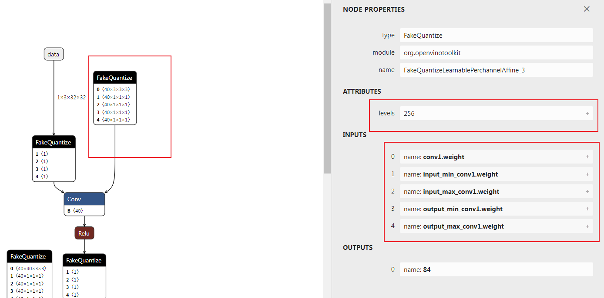

对模型量化框架mqbench添加openvino推理格式支持
商汤开源的量化框架mqbench支持QAT算法以及对多种推理框架（NNIE、TensorRT等）的部署支持，可能由于商汤内部在Intel CPU这种通用硬件下的场景不多，缺少对Intel 部署框架openvino的支持，本文将介绍采用mqbenc量化后的模型如何采用openvino去部署。
完整代码见 https://github.com/ModelTC/MQBench (没错，相关代码进过PR已经merge进官方github)
openvino 推理格式的对齐
openvino官方实际上是有官方模型压缩框架的，叫nncf，我之前还写过一篇文章专门介绍nncf下的量化。这里给出nncf量化的文档地址：Readme。给出的文档和源码是对不上的，不推荐去看，但是用起来在显存占用上nncf的模型优于基于torch.fx的mqbench，主要原因在于nncf量化不对batchnorm进行合并。此外，由于其参数就是完全和FakeQuantize中的参数完全对应的，因此其和openvino的推理结果是完全对齐的。
openvino中的量化模型采用onnx，新添了一个FakeQuantize的op来表示FakeQuantize的输出所对应的算子需要在低比特下去运算。FakeQuantize的算子如下图所示：

可以看到FakeQuantize一共五个输入，一个levels的属性。这里需要明确输入和属性的各个含义，需要参考nncf中的导出onnx时候的源码。
地址：nncf/torch/quantization/quantize_functions.py
参考源码：
| class ExportQuantizeToFakeQuantize(torch.autograd.Function):
@staticmethod
def symbolic(g, input_, levels, input_low, input_high, output_low, output_high):
return g.op(add_domain("FakeQuantize"), input_, input_low, input_high, output_low, output_high, levels_i=levels)
@staticmethod
def forward(ctx, input_, levels, input_low, input_high, output_low, output_high):
return torch.clone(input_)
@staticmethod
def backward(ctx, grad_output):
# backward is not used during export
return grad_output
|
ExportQuantizeToFakeQuantize 得到layer定义
地址nncf/torch/quantization/layers.py Line 249
| def run_export_quantization(self, x: torch.Tensor):
if self._export_mode == QuantizerExportMode.FAKE_QUANTIZE:
x, levels, input_low, input_high = self._prepare_fq_export_quantization(x)
return ExportQuantizeToFakeQuantize.apply(x, levels, input_low, input_high, input_low, input_high)
|
从这里可以看出
output_low = input_low
output_high = input_high
追溯_prepare_fq_export_quantization方法
| def _prepare_fq_export_quantization(self, x: torch.Tensor):
x, level_high, level_low, input_low, input_high = self._prepare_export_quantization(x)
with no_jit_trace():
levels = level_high - level_low + 1
return x, levels, input_low, input_high
|
_prepare_export_quantization方法，这里以对称量化为例
| def _prepare_export_quantization(self, x: torch.Tensor):
with no_jit_trace():
input_low, input_high = self._get_input_low_input_high(self.scale,self.level_low,self.level_high,self.eps)
level_low = self.level_low
level_high = self.level_high
if self._half_range:
x = torch.min(torch.max(x, input_low), input_high)
level_low = 2 * self.level_low
level_high = 2 * self.level_high + 1
input_low, input_high = self._get_input_low_input_high(level_high / self.level_high * self.scale,level_low,level_high,self.eps)
return x, level_high, level_low, input_low, input_high
|
self.level_low
找到calculate_level_ranges方法，这里不再贴代码，直接说结论
self.level_low和self.level_high分别表示量化区间的最小值和最大值，跟量化到有符号数还是无符号数和量化的位数有关。
综合《模型压缩框架nncf模型量化中QAT量化参数的梯度推导》这一篇文章的公式，总结各个变量含义
\[
s=\frac{level_{high}-level_{low}}{q_{range}}
\]
\[
q_{high} = q_{low} + q_{range}
\]
\[
\operatorname{fakequantize}( x,q_{low},q_{range} ) = \frac{round(s \cdot (\operatorname{clip}(x, q_{low}, q_{high}) - q_{low}))}{s} + q_{low}
\]
公式中的\(q_{low},q_{high}\)即对应源码中的input_low、input_high
然而，mqbench中采用的是量化的标准公式，如何对应呢？或者说两种公式如何转换呢？
首先给出量化的标准公式
\[
\operatorname{fakequantize}( x,scale,zeropoint) = scale * (clip(round(\frac{x}{scale} + zeropoint),level_{low},level_{high}) - zeropoint)
\]
也就是需要找到\(q_{low},q_{high}\)与\(scale,zeropoint\)的对应关系
对openvino中FakeQuantize的表示公式进行变换
\[
sinv := \frac{1}{s}
\]
\[
\begin{align}
\operatorname{fakequantize}( x,q_{low},q_{range} ) &= \frac{round(s \cdot (\operatorname{clip}(x, q_{low}, q_{high}) - q_{low}))}{s} + q_{low} \\ &= sinv \cdot round( (\operatorname{clip}(\frac{x - q_{low}}{sinv}, 0, \frac{q_{range}}{sinv}))) + q_{low} \\ &= sinv \cdot [round( \operatorname{clip}(\frac{x - q_{low}}{sinv}, 0, \frac{q_{range}}{sinv})) + \frac{q_{low}}{sinv}] \\ &= sinv \cdot [\operatorname{clip}(round(\frac{x - q_{low}}{sinv}), 0,level_{high}-level_{low}) + \frac{q_{low}}{sinv}] \\ &= sinv \cdot [\operatorname{clip}(round(\frac{x}{sinv} + ( level_{low} - \frac{q_{low}}{sinv})), level_{low},level_{high}) - (level_{low}-\frac{q_{low}}{sinv})]
\end{align}
\]
对比公式可以得到
\[
s=\frac{level_{high}-level_{low}}{q_{range}}
\]
\[
q_{high} = q_{low} + q_{range}
\]
\[
scale=1/s
\]
\[
zeropoint=level_{low}-s \cdot q_{low}
\]
通过以上化简可以得到一个二元一次方程组，解出来既可以得到两种表示方法的转换关系
下面给出转换代码
| scale = np.abs(np.asarray(scale, dtype=np.float64).reshape(-1))
zero_point = np.asarray(np.round(zero_point), dtype=np.int64).reshape(-1)
level_range = np.round(level_high) - np.round(level_low)
input_range = scale * level_range
input_high = (np.round(level_high).astype(np.int64) - zero_point).astype(np.float64) * input_range / level_range
input_low = input_high - input_range
|
这里需要注意的是，zero_point 要求是一个定点数，且位于量化区间内。scale要求为大于0的值。
zero_point的处理在mqbench的处理中也可以看到
| zero_point = (zero_point.round() - zero_point).detach() + zero_point
|
下面顺便给出qmin,qmax到scale、zeropoint
| y_scale = (input_high - input_low) / (level_high - level_low)
y_zero_point = (level_low * input_high - level_high * input_low) / (input_high - input_low)
|
对mqbench onnx算子的替换
主要是将mqbench自定义的伪量化算子全部转换为FakeQuantize
公式上个小结已经讨论过，下面直接给出onnx节点的替换代码
| for node in graph.node:
# code ...
# Create a node (NodeProto)
fakeq_inputnames = [item % tensor_name for item in ['input_min_%s', 'input_max_%s','output_min_%s','output_max_%s']]
node_def = helper.make_node(
'FakeQuantize', # node name
[tensor_name, *fakeq_inputnames], # inputs
[output_name], # outputs
levels=levels, # Attributes
domain="org.openvinotoolkit",
name=node.name
)
node_defs.append(node_def)
scale = np.abs(np.asarray(scale, dtype=np.float64).reshape(-1))
zero_point = np.clip(np.asarray(np.round(zero_point), dtype=np.int64).reshape(-1), a_min=qmin, a_max=qmax)
qrange = np.round(qmax) - np.round(qmin)
input_range = scale * qrange
input_high = (np.round(qmax).astype(np.int64) - zero_point).astype(np.float64) * input_range / qrange
input_low = input_high - input_range
input_low_size = input_low.size
try:
next_node = inp2node[node.output[0]][0][0]
fake_node = out2node[next_node.input[1]]
tensor = name2data[fake_node.input[0]]
shape_length = len(tensor.shape)
new_shape = [-1, ] + [1,] * (shape_length - 1)
except:
new_shape = [-1, ]
if input_low_size != 1:
input_low = input_low.reshape(*new_shape)
input_high = input_high.reshape(*new_shape)
input_low = input_low.astype(np.float32)
input_high = input_high.astype(np.float32)
for initializer_name,value_tensor in zip(fakeq_inputnames,[input_low, input_high, input_low, input_high]):
if initializer_name in insert_initializer_names:
continue
initializer = numpy_helper.from_array(value_tensor)
initializer.name = initializer_name
insert_initializer_names.add(initializer_name)
graph.initializer.append(initializer)
|
qmax,qmin表示level_low,level_high。
删除这些节点以后，需要对整个onnx模型执行一遍拓扑排序，删除无用的initializer
Relu等unsigned activation在对称量化时的特殊操作
设置量化方式为对称量化时，为了充分利用量化区间，nncf的setting是将量化区间调整为
\[
[0, 2^{numbits} - 1]
\]
对应操作代码为
| aqconfig_8bit = copy.deepcopy(qconfig.activation)
aq_symmetry = True if is_symmetric_quant(qconfig.activation.p.keywords['qscheme']) else False
aqconfig_8bit.p.keywords['quant_min'] = 0
aqconfig_8bit.p.keywords['quant_max'] = 2 ** 8 - 1
aqconfig_8bit.p.keywords['factory_kwargs'] = {'not_calc_quant_min_max':True}
for node in node_to_quantize_output:
if aq_symmetry:
if node.op == "call_module" and isinstance(modules[node.target], self.module_type_to_quant_unsigned):
logger.info("Set {} post act quantize to 8 bit unsigned type.".format(node.name))
fake_quantizer = aqconfig_8bit()
|
weight 的 7bit量化
为了解决在AVX2 and AVX-512指令集下的8bit计算overflow问题，nncf中weight全部采用7bit量化。这里如果不进行处理，确实会造成openvino推理结果与torch输出结果的不一致。因此需要在量化时对weight的量化过程做特殊
| def _weight_quant(self, model: GraphModule, qconfig):
logger.info("Replace module to qat module.")
wqconfig_8bit = copy.deepcopy(qconfig)
wq_symmetry = True if is_symmetric_quant(qconfig.weight.p.keywords['qscheme']) else False
numbits = 8
logger.info('Now all weight quantizers will effectively use only 7 bits out of 8 bits. This resolves the overflow issue problem on AVX2 and AVX-512 machines.')
wqconfig_8bit.weight.p.keywords['quant_min'] = -2 ** (numbits - 2) if wq_symmetry else 0
wqconfig_8bit.weight.p.keywords['quant_max'] = 2 ** (numbits - 2) - 1 if wq_symmetry else 2 ** (numbits - 1) - 1
wqconfig_8bit.weight.p.keywords['factory_kwargs'] = {'not_calc_quant_min_max':True}
flattened_qconfig_dict = get_flattened_qconfig_dict({'': wqconfig_8bit})
propagate_qconfig_(model, flattened_qconfig_dict)
self._qat_swap_modules(model, self.additional_qat_module_mapping)
return model
|
__init__初始化方法中添加
| factory_kwargs = deepcopy(factory_kwargs)
self.not_calc_quant_min_max = factory_kwargs.pop('not_calc_quant_min_max', False) if isinstance(factory_kwargs,dict) else False
|
_calculate_qmin_qmax方法
| @torch.jit.export
def _calculate_qmin_qmax(self) -> Tuple[int, int]:
if self.has_customized_qrange:
# some code ...
if self.not_calc_quant_min_max:
quant_min, quant_max = self.quant_min, self.quant_max
|
写在最后
该项目好比机械行业的逆向工程，不过难度相对小一些。通过对nncf的分析，使得一般的训练框架都可以按照以上的setting实现到openvino下的转换，也算对mqbench做了点贡献。
最后更新: October 16, 2022